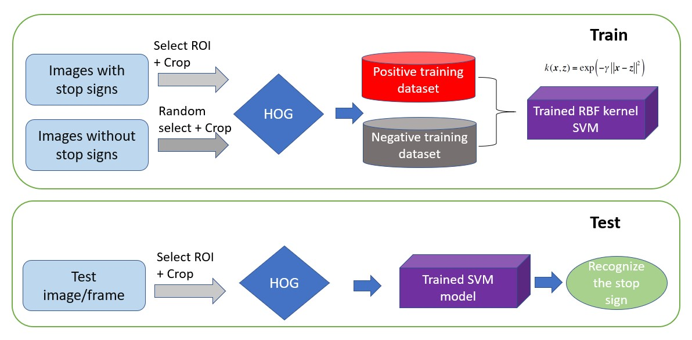
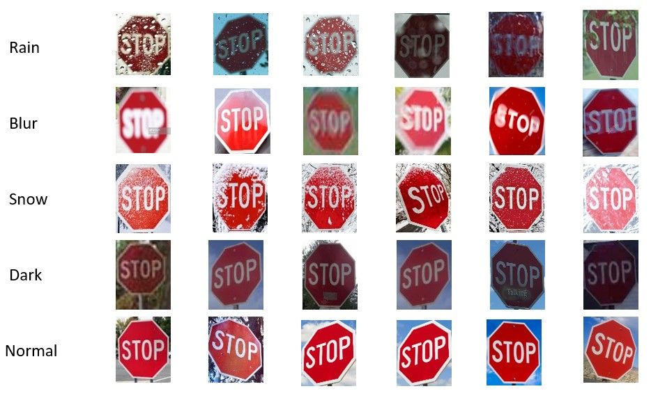
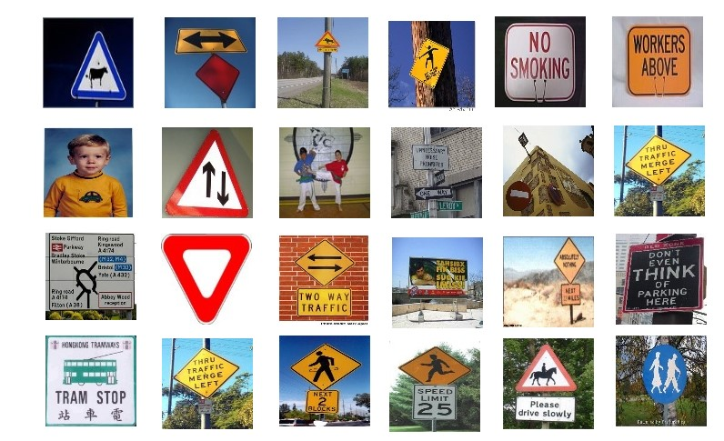
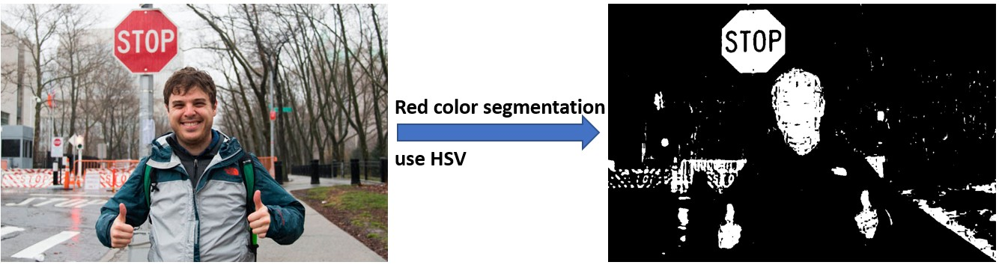
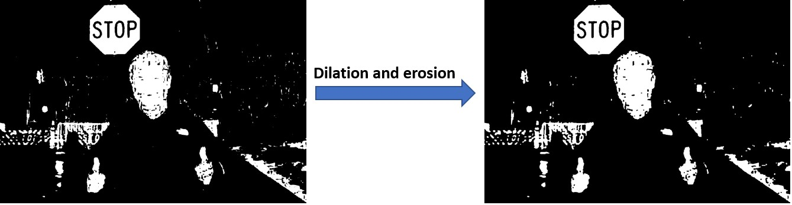
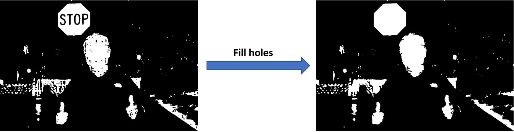
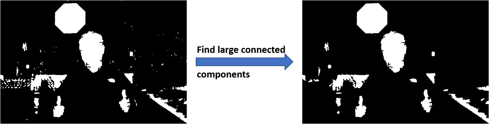
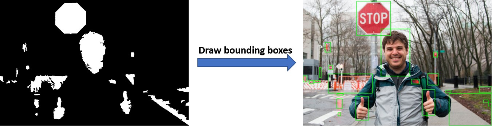
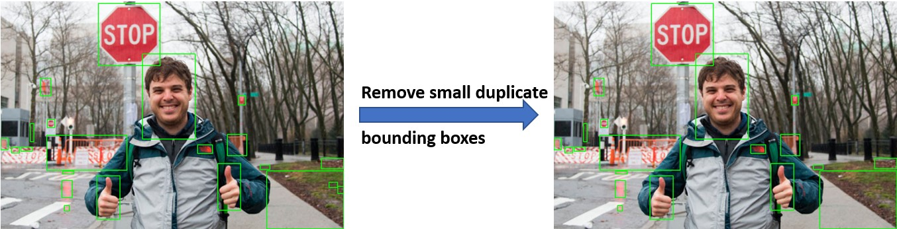
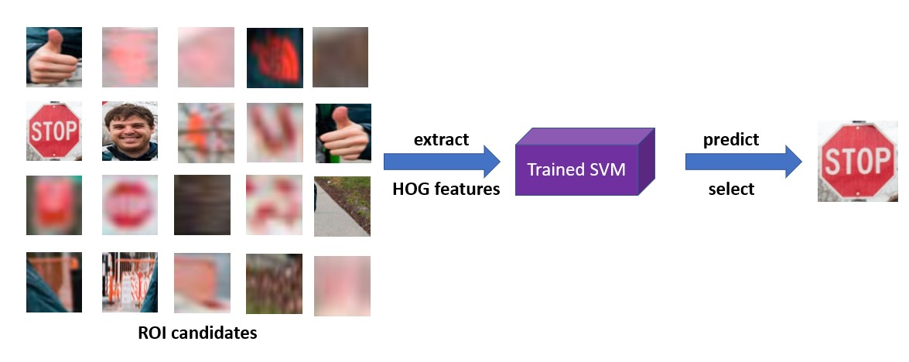

Background
Traffic signs play a significant role in the modern traffic system, and it becomes even more important in recent years due to the emergence of autonomous vehicles. The problem we are aiming to solve is to use the computer vision technologies to do the stop signs recognition under different driving scenarios and extreme cases.
Motivation
In the development of autonomous vehicles, recognizing the stop signs plays a very important role. Although in the future, when connected autonomous vehicles are developed, this may be solved by using roadside units sending instructions to the vehicles, nowadays, we still need to rely on the vehicles themselves to recognize road lanes and signs. Furthermore, vehicles that can recognize traffic signs will improve the driving experiences and safety for the drivers. Most drivers may have experienced situations when they were driving too fast on the highways and did not see clearly what the road guidance sign tells, hence driving to the wrong direction. In other cases, drivers may not see speed limit signs when the environment is dark, hence getting a ticket on over speeding.
These scenarios can all be avoided as long as we can develop an application that can automatically recognize the traffic signs. The vehicles that are equipped with this application can extract the key information, and either speak it out or display it on the head-up displays (HUD).
Current state-of-the-art
My second paragraph.
Model 1 - Deep Learning Approch
OverView
In this part, we tried to use YOLOv3 to perform traffic sign detection with COCO dataset and LISA Traffic Sign Dataset (LISA-TS), we examed our results by using challenging condition pictures.
First try: YOLOv3 + COCO
Model 2 - SVM + HOG
Algorithm
We downladed dataset with stop signs as positive dataset and without stop signs as negative dataset from the internet. Applied algorithm to select and crop ROI for positive dataset. Randomly select and crop subimages from negative data set. Resize the subimages to be the same size and use HOG to extract features for each images.
Training Dataset
Positive Training Dataset
Our positive training dataset including the extreme conditions such as raining, snowing, blur, dark. Part of the traing dataset is shown as following.
Negative Training Dataset
Our negative training dataset including the subimages without stop signs. Part of the traing dataset is shown as following.
Example
Here we want to illustrate the process of our algorithm using an image with complex background. First, we convert the orignial image to a HSV format. HSV format is more robust to color segmentation. We define a range to select out all the red objects.
Secondly, we use dialation and erosiion to romove noise in the image.
Thirdly, we applied algorithm to fill holes within a contour. For example, after filling the holes, the "stop" holes in the stop sign will be removes. In this way, we can remove unneccessary contours and decrease the number of ROI candidates to reduce the running time and increase the detection accuracy.
Fourthly, we discard the contours with sizes smaller than a threshold to remove small unneccessary objects.
We pick the bottom left and top left pixels to draw bounding boxes. Each subimage in the bounding box is a candidate ROI.
Finally, remove the unneccessary small bounding box laying within a big bounding box to get the ROI candidates.
Selection using SVM
We got several ROI candidates after the ROI selection. We use HOG to extract features for each ROI candidates and put the features for each ROI candidate to the trained RBF kernel SVM model and get the stop sign.
Results and Comparation
We tested our algorithm on extreme weather conditions as well as with the images of complex backgrouds (such as with lots of red objects around the stop signs as the following. Our algorithm is very robust to these conditions and can detect the stop signs in these images correctly.

We drove in Madison when the weather is raining and sunny. Our alogrithm can successfully detect and track stop signs in the following video.
Discussion
Our algorithm can recognize the stop sign in differnet scienarios quickly and robustly.